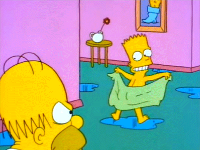
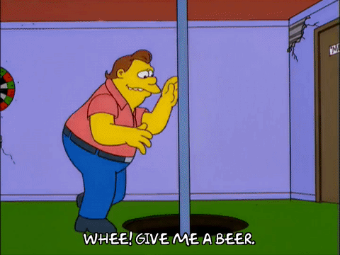

jQuery
Write less, do more
O que é jQuery?
- É uma biblioteca JavaScript.
- Facilita de forma considerável o desenvolvimento.
- jQuery é simples de aprender!
O propósito do jQuery é tornar bem mais simples o uso de JavaScript no seu site.
jQuery...
jQuery reúne várias tarefas comuns, que geralmente necessitam de várias linhas de código, em métodos que podem ser chamados em apenas uma linha.
Recursos
- Manipulação de elementos em um documento HTML.
- Manipulação de CSS.
- Manipulação de eventos HTML.
- Efeitos e animações.
- AJAX.
Usando jQuery!
Existem duas formas de adicionar o jQuery ao seu projeto.
- Fazendo o download a biblioteca no site jquery.com
- Incluindo o jQuery através de um CDN, como Google
Download
Existem duas versões disponíveis para download.
- Production version. (Simplificada e comprimida)
- Development version. (Código legível)
Download
jQuery é um único arquivo JavaScript, e você deve referência-lo com a tag script.
(Content Delivery Network) CDN
Caso não queira fazer o download e hospedar o jQuery você mesmo, você pode incluí-lo através de uma Content Delivery network.
Tanto o Google quanto a Microsoft hospedam o jQuery.
(Content Delivery Network) CDN
Microsoft
Sintaxe
A sintaxe do jQuery é feita para selecionar elementos e realizar ações sobre eles.
A sintaxe básica é:
$(selector).action()
- $ -> Define o jQuery
- selector -> Um seletor para encontrar elementos HTML
- action() -> A ação a ser executada
Exemplos
$(this).hide() // Esconde o elemento atual$("p").hide() // Esconde todos os elementos p$(".azul").hide() // Esconde todos os elementos com a classe "azul"$("#idAzul").hide() // Esconde o elemento que possui o id "idAzul"
Seletores
Seletores são utilizados para encontrar elementos HTML pelo seu nome, id, classes, tipos, atributos, valores de atributos e muito mais.
Seletor de elemento
Seleciona todos os elementos da página de acordo com o nome do elemento.
$("p")
Seletor de #id
Utiliza o atributo id de uma tag HTML para encontrar um elemento específico.
$("#id")
Um id deve ser único em um documento HTML, então deve-se usar o seletor de #id, quando se quer encontrar um único elemento.
Seletor de .classe
Utiliza o atributo class para encontrar todos os elementos da classe especificada.
$(".class")
Eventos
Todas as ações do usuário que uma página web pode responder.
Um evento representa o exato momento em que algo acontece.
Exemplos:
- Mover o mouse sobre um elemento.
- Selecionar um checkbox.
- Clicar em um elemento.
Eventos
A maior parte dos eventos do DOM possuem um equivalente em jQuery.
Eventos
Síntaxe do evento click().
O trecho abaixo dispara todos os eventos clicks dos elementos do tipo <p>.
$("p").click();
Em seguida, definimos o que deve acontecer quando o evento for disparado. Precisamos passar uma function para o evento.
$("p").click(function() {
// ação do evento.
});
Evento Document Ready
Evento executado no momento em que a página termina de carregar.
$(document).ready(function(){
// Métodos jQuery...
});
BOA PRÁTICA!!
Evento Document Ready
Colocar o JavaScript dentro do evento ready, previne que o código seja executado antes da página estar pronta.
Alguns eventos comumente usados
| Mouse Events | Keyboard Events | Form Events | Document/Window Events |
|---|---|---|---|
| click | keypress | submit | load |
| dblclick | keydown | change | resize |
| mouseenter | keyup | focus | scroll |
| mouseleave | blur | unload |
Método on()
Atribui um ou mais eventos aos elementos selecionados.
$("p").on("click", function(){ $(this).hide(); });$("p").on({ mouseenter: function(){ $(this).css("background-color", "lightgray"); }, mouseleave: function(){ $(this).css("background-color", "lightblue"); }, click: function(){ $(this).css("background-color", "yellow"); } });
Efeitos
jQuery fornece várias técnicas e ferramentas para adicionar animações em uma página. Estas incluem efeitos simples que são usados frequentemente e permitem que criemos eventos customizados.
Métodos hide() e show()
Com jQuery, podemos ocultar e exibir elementos com os métodos hide() e show().
$("seletor").hide(speed,callback);
$("seletor").show(speed,callback);
- Speed: Parâmetro opcional que especifica a velocidade em que o elemento é exibido ou escondido. Pode ter os valores: "fast", "slow" e milisegundos.
- Callback: Parâmetro opcional que especifica uma função para ser executada após a execução da animação.
Método toggle().
O método toggle() alterna entre os métodos hide() e show() automaticamente.
Sintaxe
$("seletor").toggle(speed,callback);
$("button").click(function(){
$("p").toggle();
});Fading
Método fadeIn()
$("seletor").fadeIn(speed,callback);
O método fadeIn() faz com que um elemento invisível gradualmente apareça.
Método fadeOut()

$("seletor").fadeOut(speed,callback);
O método fadeOut() faz com que um elemento visível gradualmente desapareça.
Método fadeToggle()
$("seletor").fadeToggle(speed,callback);
O método fadeToggle() alterna entre os métodos fadeIn() e fadeOut(), de acordo com o estado atual do elemento.
Método fadeTo()
$("seletor").fadeTo(speed,opacity,callback);
O método fadeTo() altera gradualmente a opacidade do elemento para o valor informado (valores de 0 a 1).
Sliding
jQuery permite que façamos elementos deslizarem pela página.
Método slideDown()

$("seletor").slideDown(speed,callback);
O método slideDown() faz com que um elemento oculto deslize para baixo até reaparecer completamente.
Método slideUp()
$("seletor").slideUp(speed,callback);
O método slideUp() faz com que um elemento visível deslize para cima até desaparecer completamente.
Método slideToggle()
$("seletor").slideToggle(speed,callback);
O método slideToggle() alterna entre os métodos slideDown() e slideUp(), de acordo com o estado atual do elemento.
Animation
jQuery fornece ferramentas para que criemos animações customizadas.
Método animate()
$("seletor").animate({params},speed,callback);
O método animate pode ser usado para criar animações customizadas.
- O parâmetro {params} é obrigatório e define as propriedades CSS do elemento a serem animadas.
Método animate() - Exemplos
O exemplo abaixo, faz com que a div mova-se a direita, até que sua propriedade left atinja o valor de 868px e então retorne a 0px.
<div style="background:#98bf21;
height:80px;
width:80px;
position:absolute;"
id="div01">
</div>
function animarDiv01() {
$("#div01").animate({left: '868px'},2000);
$("#div01").animate({left: '0px'},2000, function() {
animarDiv01();
});
}
IMPORTANTE!!!
Por padrão, o atributo position de todos os elementos HTML, possuem o valor static.
Para manipular a posição de um elemento, precisamos primeiramente alterar o valor do atributo position para relative, fixed ou absolute.
Método animate() - Exemplos
Quase todos os atributos CSS podem ser manipulados através do método animate().
Algo importante para lembrar, é que todos os nomes de atributos devem seguir o padrão camel-case quando usados com o animate().
- padding-left: paddingLeft
- margin-right: marginRight
- border-radius: borderRadius
Método animate() - Exemplos
Usando valores relativos:
$("#div02").click(function(){
var div02 = $("#div02");
if (div02.height() < 200
&& div02.width() < 200 ) {
div02.animate({height: '+=50px',
width: '+=50px'},800);
}
});